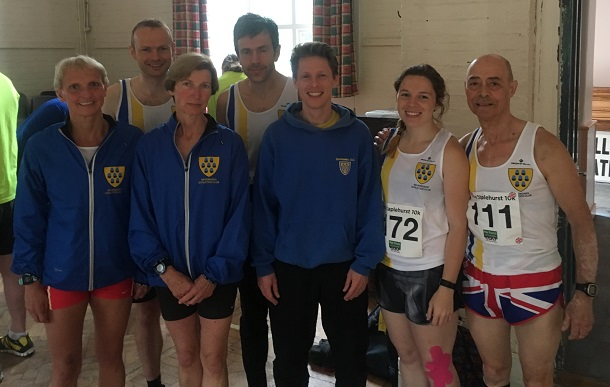

A couple of photos from Staplehurst 10, writes Grace Manzotti. I was trying to catch all of the team in a photo but there are some people missing.
So Allan Lee was second overall, Jacqui 3rd lady, Sally was 2nd W55 and Lionel 3rd M60. And I got a big PB of well over 1 minute 15. After trying in 2 previous races to go under 50. I did manage this time in 49.08.
I think it is a really well organised race, really pretty in the country lanes and nice start and finish in the village common. I think it is also a PB race
I enjoyed it much more than Larkfield. It was quite hot but there was a bit of a breeze and the sun came out in the second half.
The Sevenoaks AC results were:
| Pos | Gun Time | Chip Time | Name | Club | Category | Gender | Race No | Gender Pos | Category Pos |
|---|---|---|---|---|---|---|---|---|---|
| 2 | 00:33:33 | 00:33:33 | Allan Lee | Sevenoaks AC | Male Vet 40 | Male | 217 | 2 | 1 |
| 25 | 00:39:17 | 00:39:17 | Andrew Milne | Sevenoaks AC | Senior Male | Male | 115 | 24 | 11 |
| 39 | 00:41:11 | 00:41:11 | Daniel Witt | Sevenoaks AC | Male Vet 40 | Male | 107 | 38 | 10 |
| 43 | 00:41:34 | 00:41:33 | Jacqueline O'Reilly | Sevenoaks AC | Senior Female | Female | 34 | 3 | 2 |
| 127 | 00:49:10 | 00:49:08 | Grazia Manzotti | Sevenoaks AC | Female Vet 45 | Female | 118 | 22 | 4 |
| 135 | 00:49:43 | 00:49:41 | Sarah Shewell | Sevenoaks AC | Female Vet 55 | Female | 305 | 24 | 2 |
| 209 | 00:55:40 | 00:55:35 | Kayleigh Robinson | Sevenoaks AC | Senior Female | Female | 172 | 56 | 15 |
| 233 | 00:57:41 | 00:57:32 | Jenny Austin | Sevenoaks Ac | Female Vet 40 | Female | 164 | 69 | 17 |
| 250 | 00:59:02 | 00:58:46 | Adam Westbrooke | Sevenoaks AC | Male Vet 45 | Male | 292 | 167 | 27 |
| 251 | 00:59:06 | 00:58:59 | Josephine Neale | Sevenoaks Athletics Club | Senior Female | Female | 265 | 82 | 21 |
| 261 | 00:59:41 | 00:59:36 | lionel stielow | Sevenoaks AC | Male Vet 65 | Male | 111 | 173 | 3 |
The full results are here.
